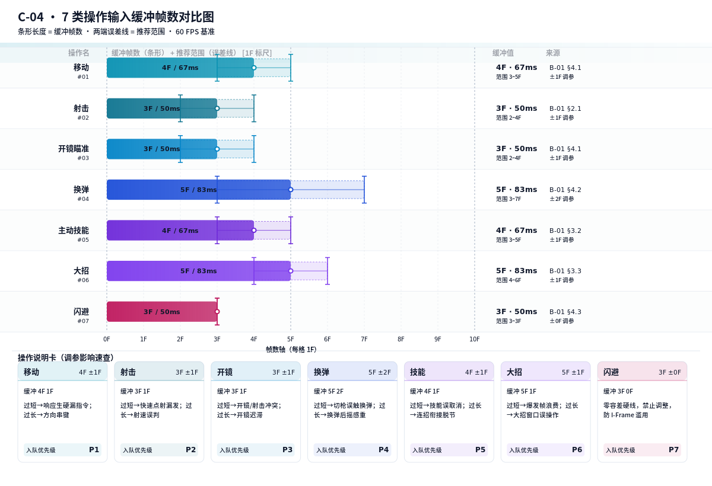
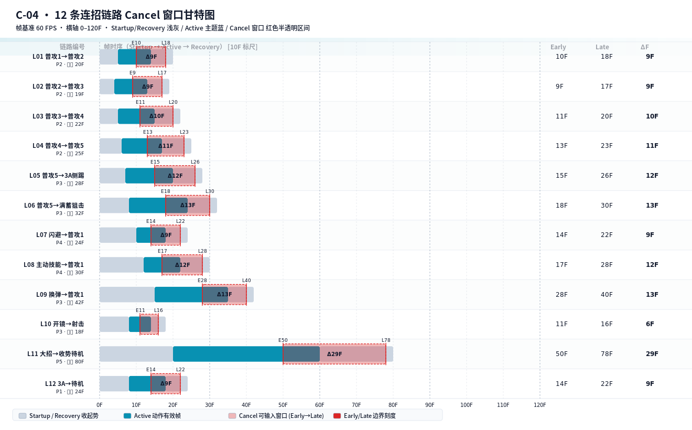

下表为 7 类玩家操作的输入缓冲帧数基准。缓冲帧定义为：自按键硬件中断到达输入系统起，到该操作被裁决层接纳的最大容忍窗口。调参范围外的修改须走变更评审。
| No. | 操作名 | 缓冲帧数 | 等效毫秒 | 推荐范围 | 调参影响 | 来源 (B-01 §N) | 备注 |
|---|---|---|---|---|---|---|---|
| 01 | 移动（WASD / 摇杆 8 方向） | 4 F | 67 ms | 3 F ~ 5 F (±1F) | 过短→高速转向漏采样、斜坡卡顿；过长→方向串键、冲刺误触发 | B-01 §4.1 | 连续方向输入合并；与冲刺输入互斥裁决 |
| 02 | 射击（左键 / RT 单发 & 连射） | 3 F | 50 ms | 2 F ~ 4 F (±1F) | 过短→快速点射漏发、射速上限失真；过长→单发误连发、弹匣消耗异常 | B-01 §2.1 | 连射模式下与 FireRate 取较大值；与开镜联动 |
| 03 | 开镜瞄准（右键 / LT ADS） | 3 F | 50 ms | 2 F ~ 4 F (±1F) | 过短→开镜/射击按键冲突、盲射判定歧义；过长→开镜迟滞手感 | B-01 §4.1 | 与射击键同帧到达时，按 §3 优先级射击先入队 |
| 04 | 换弹（R / □） | 5 F | 83 ms | 3 F ~ 7 F (±2F) | 过短→切枪/冲刺误触换弹；过长→换弹后摇操作迟滞 | B-01 §4.2 | 弹匣未满才接纳；与 LastShot 帧绑定裁决 |
| 05 | 主动技能（E / ○） | 4 F | 67 ms | 3 F ~ 5 F (±1F) | 过短→技能与普攻同帧误取消；过长→连招衔接脱节、CD 误判 | B-01 §3.2 | CD 冷却完成前的输入按 §5 Early 抛弃 |
| 06 | 大招（Q / △ Burst） | 5 F | 83 ms | 4 F ~ 6 F (±1F) | 过短→爆发帧浪费、切招手感碎；过长→大招窗口误操作、资源滥用 | B-01 §3.3 | Burst Gauge ≥100% 前的输入按 §5 Early 抛弃 |
| 07 | 闪避（Shift / × Dash / I-Frame） | 3 F | 50 ms | 3 F ~ 3 F (±0F) | 零容差硬线，禁止上调防止 I-Frame 滥用；禁止下调防止高速来向弹无法规避 | B-01 §4.3 | 冷却=闪避动画总帧数；Stamina 不足按 §5 抛弃 |

入队及同帧冲突裁决按以下优先级从高到低执行。高优先级操作挤占队列时，挤出队尾最低优先级条目；同优先级按 FIFO。
| 优先级 | 操作 | 遗忘超时 (F) | 遗忘超时 (ms) | 合并策略 | 挤占行为 |
|---|---|---|---|---|---|
| P7 | 闪避 | 6 F | 100 ms | 禁止合并（每帧独立判断） | 可挤出 P1~P6；同帧多闪避只保留首条 |
| P6 | 大招 | 12 F | 200 ms | 同操作 ≤2F 合并；去重保留最新按键 | 可挤出 P1~P5；禁止挤出 P7 |
| P5 | 主动技能 | 10 F | 167 ms | 同操作 ≤2F 合并；CD 未就绪不合并 | 可挤出 P1~P4；禁止挤出 P6~P7 |
| P4 | 换弹 | 12 F | 200 ms | 同操作 ≤2F 合并；弹匣已满不入队 | 可挤出 P1~P3；禁止挤出 P5~P7 |
| P3 | 开镜瞄准 | 8 F | 133 ms | 开镜状态切换合并；长按保持不重复入队 | 可挤出 P1~P2；禁止挤出 P4~P7 |
| P2 | 射击 | 6 F | 100 ms | 连射模式下连续合并；单发按 2F 合并 | 仅可挤出 P1；禁止挤出 P3~P7 |
| P1 | 移动 | 8 F | 133 ms | 8 方向连续合并；方向变更按新方向入队 | 默认队尾占位；被其余 6 类挤占时首出 |
下表定义 12 条连招链路的三段帧区间（Startup / Active / Recovery）与 Cancel 窗口边界。Early Cancel 起始帧 = 可接受下一段输入的最早帧；Late Cancel 截止帧 = 可接受下一段输入的最晚帧。总窗口帧数 ΔF = Late - Early + 1。
动作帧区间来源均为 B-01 §N，FSM 状态跳转校验引用 C-02 §N。
| 链路编号 | 来源动作 (B-01) | 起势 Startup (帧) | 有效 Active (帧) | 收势 Recovery (帧) | Early Cancel 起始 | Late Cancel 截止 | 总窗口 ΔF | 冲突裁决优先级 |
|---|---|---|---|---|---|---|---|---|
| L01 | 普攻1 → 普攻2 B-01 §2.1 | 0 – 5 (6F) | 6 – 14 (9F) | 15 – 20 (6F) | 10 F | 18 F | 9 F | P2 |
| L02 | 普攻2 → 普攻3 B-01 §2.2 | 0 – 4 (5F) | 5 – 13 (9F) | 14 – 19 (6F) | 9 F | 17 F | 9 F | P2 |
| L03 | 普攻3 → 普攻4 B-01 §2.3 | 0 – 5 (6F) | 6 – 15 (10F) | 16 – 22 (7F) | 11 F | 20 F | 10 F | P2 |
| L04 | 普攻4 → 普攻5 B-01 §2.4 | 0 – 6 (7F) | 7 – 17 (11F) | 18 – 25 (8F) | 13 F | 23 F | 11 F | P2 |
| L05 | 普攻5 → 3A 侧踢 B-01 §2.5 | 0 – 7 (8F) | 8 – 20 (13F) | 21 – 28 (8F) | 15 F | 26 F | 12 F | P3 |
| L06 | 普攻5 → 满蓄狙击 B-01 §2.6 | 0 – 8 (9F) | 9 – 24 (16F) | 25 – 32 (8F) | 18 F | 30 F | 13 F | P3 |
| L07 | 闪避 → 普攻1 B-01 §4.3 | 0 – 10 (11F) | 11 – 18 (8F) | 19 – 24 (6F) | 14 F | 22 F | 9 F | P4 |
| L08 | 主动技能 → 普攻1 B-01 §3.2 | 0 – 12 (13F) | 13 – 22 (10F) | 23 – 30 (8F) | 17 F | 28 F | 12 F | P4 |
| L09 | 换弹 → 普攻1 B-01 §4.2 | 0 – 15 (16F) | 16 – 35 (20F) | 36 – 42 (7F) | 28 F | 40 F | 13 F | P3 |
| L10 | 开镜 → 射击 B-01 §4.1 | 0 – 8 (9F) | 9 – 14 (6F) | 15 – 18 (4F) | 11 F | 16 F | 6 F | P3 |
| L11 | 大招 → 收势待机 B-01 §3.3 | 0 – 20 (21F) | 21 – 60 (40F) | 61 – 80 (20F) | 50 F | 78 F | 29 F | P5 |
| L12 | 3A → 待机 B-01 §2.7 | 0 – 8 (9F) | 9 – 18 (10F) | 19 – 24 (6F) | 14 F | 22 F | 9 F | P1 |

以 5F 为一格切分 0–80F 帧轴，对 12 条链路计算各帧段是否落入 Cancel 窗口内（1 = 可 Cancel，0 = 不可），鼠标悬停显示链路编号、帧段范围、Early/Late 边界与裁决结果。
| 操作 | 前置条件 | 不满足时 DebugTag | 回落行为 |
|---|---|---|---|
| 主动技能 | CD 冷却完成 (SkillCdTimer == 0) | C04_RESOURCE_SKILL_CD | 保留输入至 CD 结束前 1F；仍未就绪按 Early 抛弃 |
| 大招 | Burst Gauge ≥ 100% | C04_RESOURCE_BURST_GAUGE | 保留输入至 Gauge 满；超过 18F 按遗忘清除 |
| 闪避 | Stamina ≥ 闪避消耗 & 冷却完成 | C04_RESOURCE_STAMINA | 立即抛弃；无保留 |
| 换弹 | 弹匣未满 & 备弹 > 0 | C04_RESOURCE_AMMO | 立即抛弃；无保留 |
| 射击 / 开镜射击 | 弹匣 > 0 | C04_RESOURCE_MAG | 触发自动换弹裁决（L09 链路条件检查） |
每帧（60 FPS）按以下顺序执行。单帧处理耗时 ≤ 0.5F，超出需写入性能告警。
// C04_INPUT_CANCEL_ARBITER · 每帧 Tick · 60 FPS PROCEDURE C04_Tick(tick, currentAnim, frameInAnim, queue) // ---- [1] 输入轮询层 Polling ---- rawInputs[] = HW_ScanInputs() // 硬件扫描 (HID + 手柄) FOR EACH op IN rawInputs: op.priority = GET_PRIORITY(op.type) // §3.2 P7..P1 op.birthTick = tick op.bufferF = GET_BUFFER(op.type) // §2 基准 op.rangeMin = GET_RANGE_MIN(op.type) op.rangeMax = GET_RANGE_MAX(op.type) // ---- [2] 入队排序 Enqueue & Merge ---- FOR EACH op IN rawInputs: IF SAME_OP_WITHIN_2F(op, queue.tail) THEN MERGE(queue.tail, op) // §3.1 同操作 ≤2F 合并 CONTINUE END IF IF queue.LEN() >= 3 THEN // §3.1 队列深度上限 victim = queue.MIN_PRIORITY_TAIL() IF op.priority > victim.priority THEN queue.EVICT(victim) LOG(DebugTag=C04_QUEUE_EVICT, victim, op) ELSE LOG(DebugTag=C04_QUEUE_FULL, op) CONTINUE END IF END IF queue.INSERT_BY_PRIORITY(op) // §3.2 高→低排序 END FOR // ---- [3] 遗忘超时 Forgetting ---- FOR EACH op IN queue: age = tick - op.birthTick IF age > GET_FORGET_TIMEOUT(op.type) THEN // §3.2 各操作遗忘超时 queue.REMOVE(op) LOG(DebugTag=C04_FORGET_TIMEOUT, op, age) END IF IF age > 18 THEN // §3.1 最大滞留帧硬线 queue.REMOVE(op) LOG(DebugTag=C04_FORCE_EXPIRE_18F, op, age) END IF END FOR // ---- [4] 出队 & Early/Late 判定 Dequeue & Window Check ---- IF queue.EMPTY() THEN RETURN head = queue.PEEK() linkId = MATCH_LINK(currentAnim, head.type) // §4 12 条链路匹配 IF linkId = NULL THEN // §5.3 未登记链路 FALLBACK_TO_IDLE_OR_RECOVERY_END() LOG(DebugTag=C04_LINK_UNREGISTERED, currentAnim, head) queue.POP() RETURN END IF LET (E, L) = GET_CANCEL_WINDOW(linkId) // §4 Early, Late IF frameInAnim < E THEN // §5.1 早于 Early LOG(DebugTag=C04_EARLY, linkId, frameInAnim, E) // 保留 head 在队列中，允许下一帧重试（不 POP） RETURN END IF IF frameInAnim > L THEN // §5.1 晚于 Late queue.POP() FALLBACK_TO_IDLE_OR_RECOVERY_END() LOG(DebugTag=C04_LATE, linkId, frameInAnim, L) RETURN END IF // ---- [5] 裁决层 Arbiter · 资源校验 ---- ok = CHECK_RESOURCES(head) // §5.4 资源前置条件 IF NOT ok THEN LOG(DebugTag=C04_RESOURCE_*, head) RETURN // 保留队首，等待资源 END IF fsmOk = CHECK_FSM_TRANSITION(currentAnim, TARGET_OF(linkId)) // C-02 FSM 校验 IF NOT fsmOk THEN queue.POP() FALLBACK_TO_IDLE() LOG(DebugTag=C04_FSM_REJECT, currentAnim, linkId) RETURN END IF // ---- [6] 事件派发 Dispatch ---- queue.POP() FIRE_EVENT(C04_CANCEL_SUCCESS, linkId, head, frameInAnim) SET_NEXT_ANIMATION(TARGET_OF(linkId)) LOG(LogTag=C04_CANCEL_SUCCESS, tick, linkId, frameInAnim, E, L) END PROCEDURE
QA 与自动化回归必须通过以下 10 项全量检查。任何一项 FAIL 必须阻断发版。